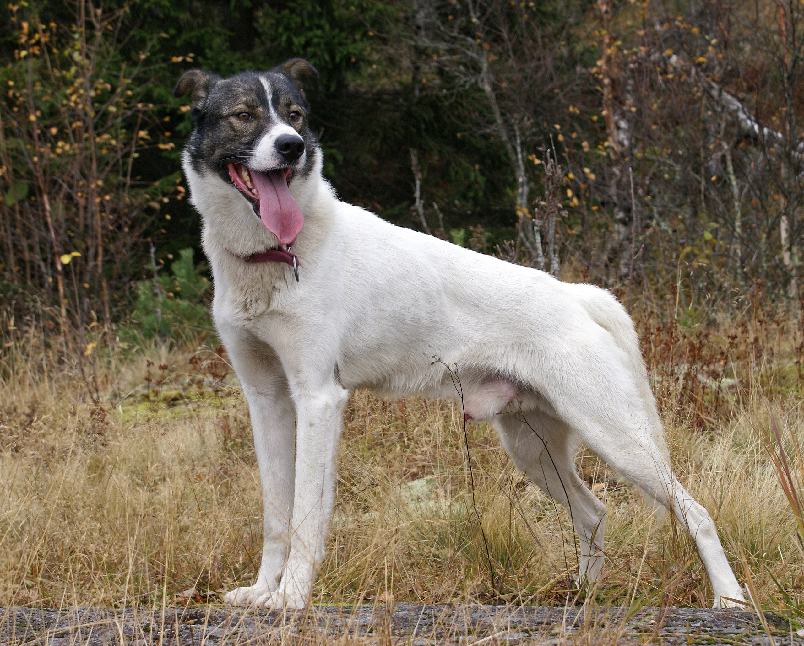

Caring for an Alaskan Husky
Taking care of your Alaskan Husky involves regularly maintaining their coat to prevent knots and tangles. Ensure their ears stay clean and brush their fur frequently.
Engage in daily exercises like walks, runs, and play to satisfy their high energy levels. Use positive reinforcement for training and maintain consistency.
Provide a balanced diet with omega-3 fatty acids for best health. Understand their pack mentality and socialize them early to boost confidence.
Create a husky-friendly environment indoors and outdoors, with toys for stimulation and a secure play area. Consider seasonal care, like extra grooming in winter and providing shade in summer. Prioritize their well-being and companionship.
Source: dogacademic.com